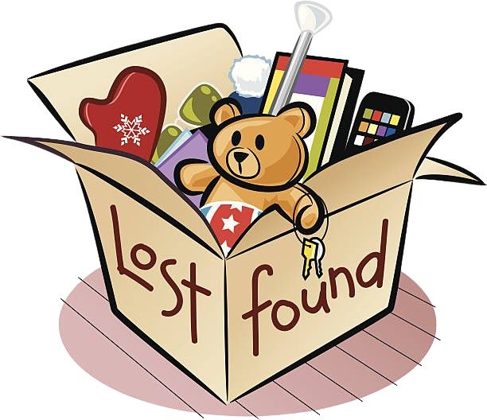

Ai pierdut ceva în campus?
Recuperează mai ușor obiectele pierdute sau ajută un coleg să își găsească lucrurile. Totul într-un singur loc, simplu și rapid.
Gratuit și accesibil tuturor studenților.

Obiect recuperat!
Încă un obiect găsit.
Caută rapid
Găsește obiecte pierdute
Simplu și sigur
Creat pentru studenți
În campus
Totul într-un singur loc